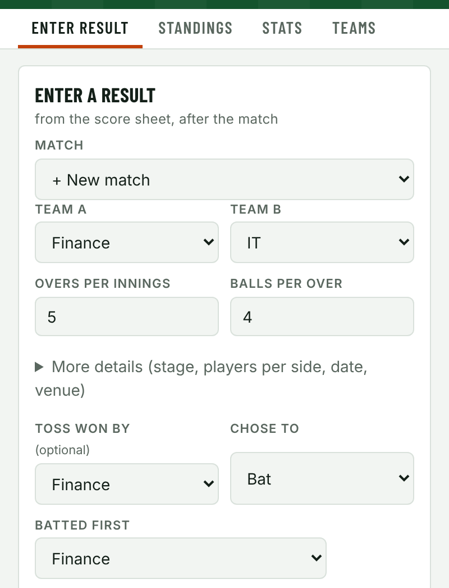
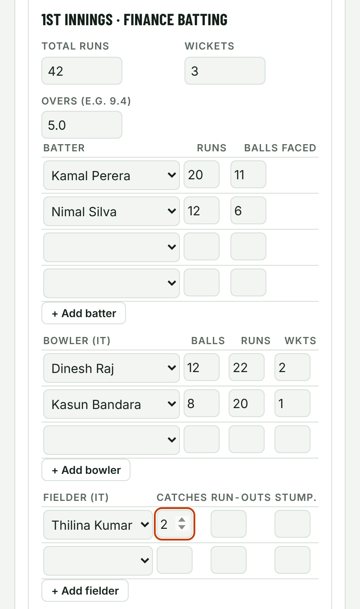
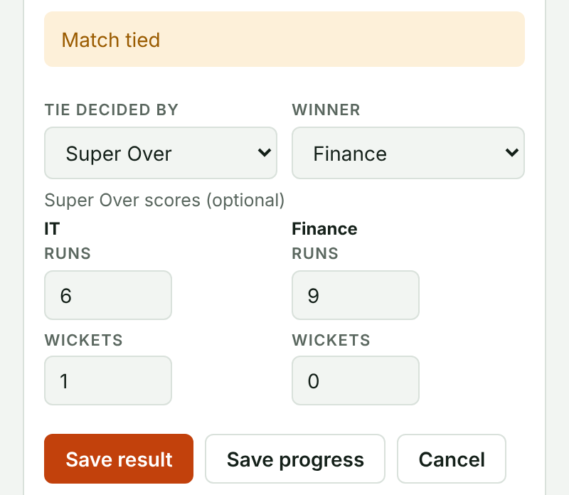

Festival Cricket · Entering a Result
For scorers. After each match, copy the key figures from the paper score sheet. The points table, net run rate and player awards update straight away.
Open pmendis.github.io/pmendis/cricket_post/ on your phone.
1Sign in
- Tap Scorer sign in and use the username and password the organiser gave you (e.g. scorer1).
- Missing a team or player? Open the Teams tab, tap + Add team or Edit, and type players one per line.
2Set up the match
- Match: pick the match from the list, or + New match.
- Team A and Team B.
- Overs per innings and Balls per over: check them for this match (e.g. 4-ball overs in the league, 6-ball overs in the semi-finals).
- More details (optional): stage (League, Super 4, Semi-final, Final), players per side, date, venue. Pick the stage for knockout matches.
- Toss (optional): who won it and whether they chose to bat or bowl. This fills in Batted first for you.
- Batted first: the team that batted first.

3Fill in each innings
| Box | What to enter |
|---|
| Total runs, Wickets, Overs | The team total, e.g. 42, 3 and 5.0. For a part over, write overs.balls, e.g. 4.2 = 4 overs and 2 balls. These three are required. |
| Batters | Pick each batter, then Runs and Balls faced. |
| Bowlers | Pick each bowler, then Balls bowled (e.g. 12 for three 4-ball overs), Runs conceded and Wkts. |
| Fielders | Anyone with Catches, Run-outs or Stumpings. |
- Need more rows? Tap + Add batter, + Add bowler or + Add fielder.
- Leave empty rows blank; they're ignored.
- Player figures feed the best batsman, bowler, fielder and player of the tournament awards, so fill in everyone who batted or bowled.

4Check the result and save
- The result appears as you type, e.g. "Finance won by 4 runs". If it looks wrong, check the totals.
- If the scores are level ("Match tied"):
- Tie decided by: Super Over, Super Over tied · boundaries, or Super Over tied · coin toss. Leave it on "Finished as a tie" only if no tie-break was played.
- Winner: the team that won the tie-break.
- Super Over scores (optional): runs and wickets for each team.
- Tap Save result. A green message confirms it.
- Not finished yet? Tap Save progress at any time. Your entries are kept (the match shows "· draft") but don't count anywhere until you reopen it and tap Save result.

5Check and correct
- Open Standings and Stats to see the updated table and awards.
- Made a mistake? Pick the same match again under Match (it shows "· entered"), fix it and save again.
- The page stops you saving obvious mistakes: more overs than allowed, too many wickets, or batters' runs adding up to more than the total.
Tips: enter the result soon after the match while the score sheet is at hand · keep the paper sheet as a backup · only the scorer who entered a match (or a head scorer) can change it · problems? contact the organiser.